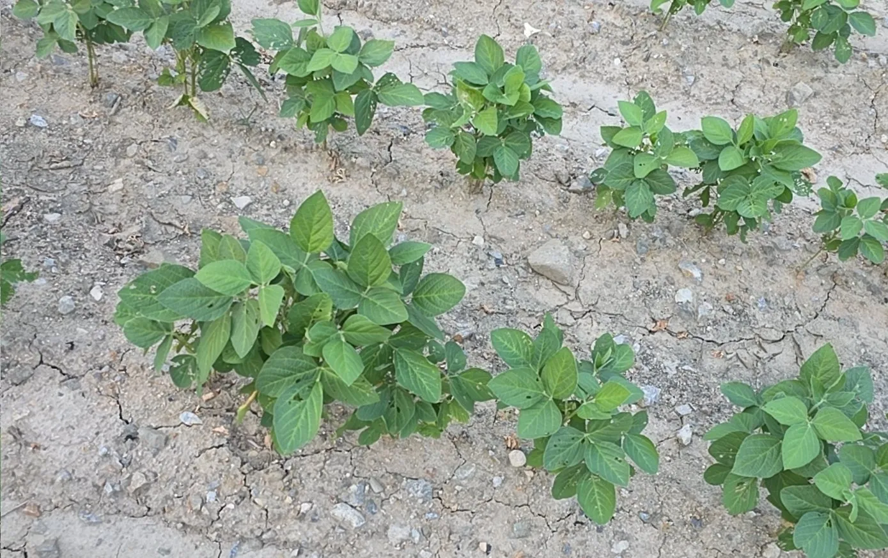
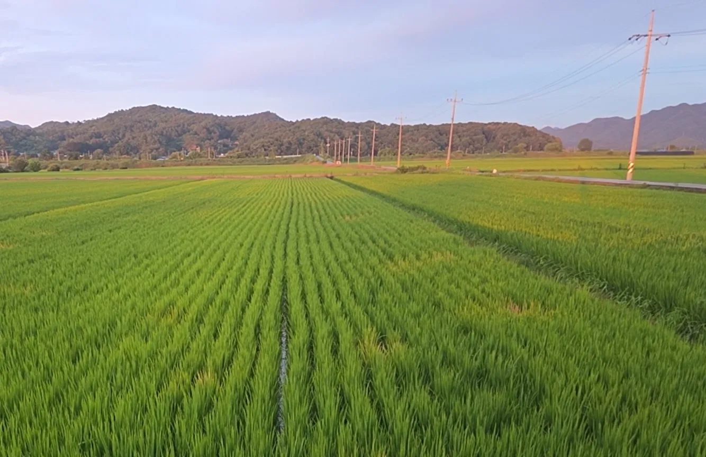
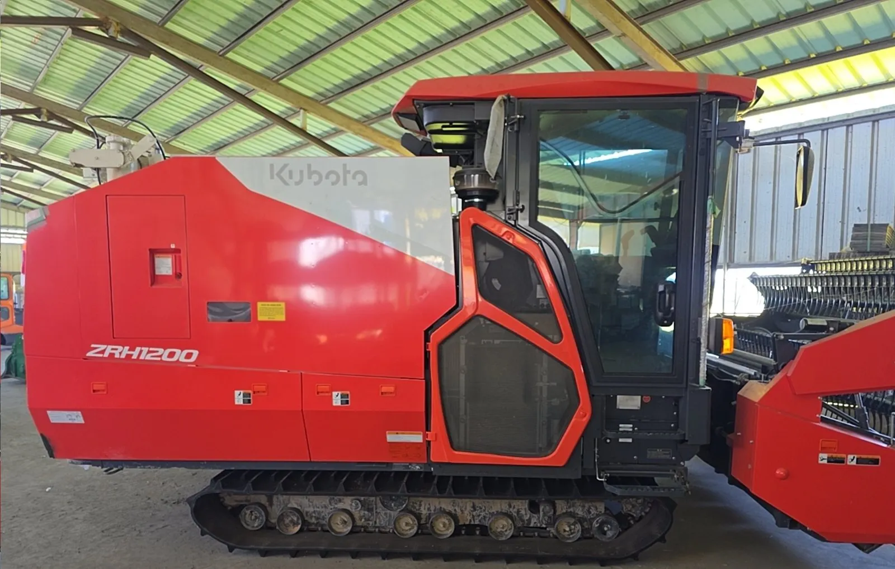
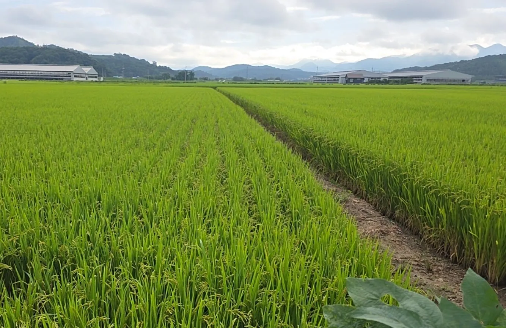
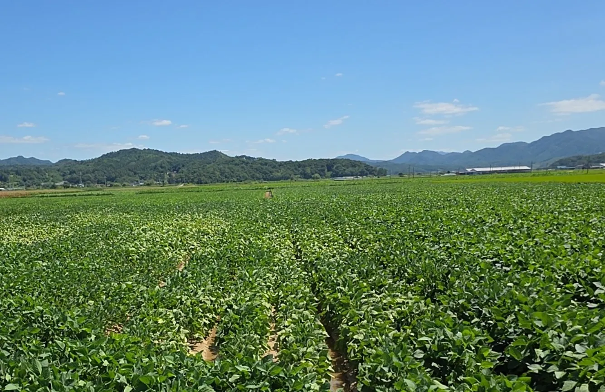
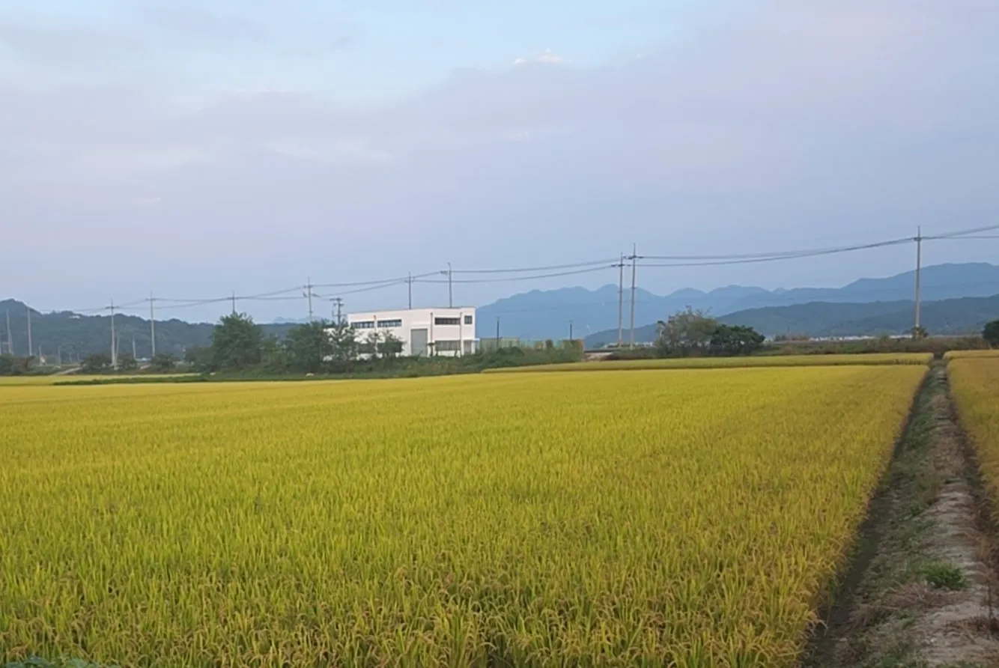
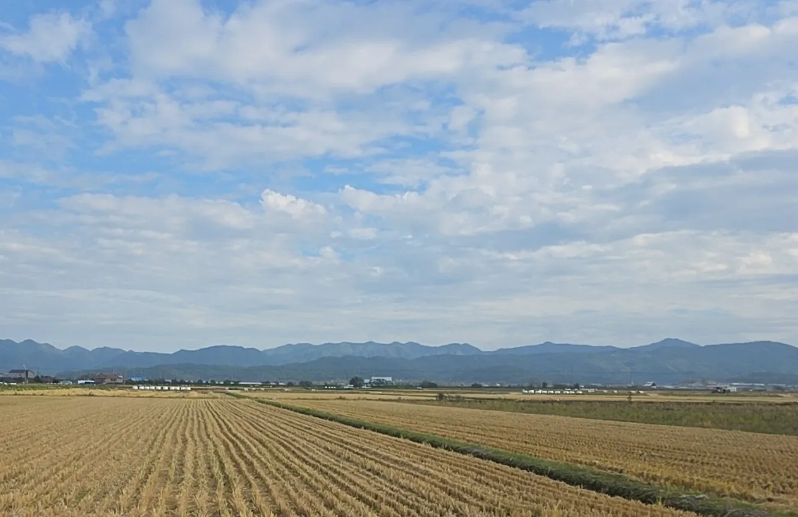

봄
논을 갈고, 볍씨를 틔워 모를 키우고, 콩을 심습니다.
모아온은 함께 모아 더 큰 가치를 만들고, 그 가치를 따뜻하게 나누고자 시작한 농업회사입니다.
‘모으다’라는 말에 사람과 경험, 기술과 농산물의 가치를 모은다는 뜻을 담았습니다.
‘온’에는 그 결실을 따뜻하게(溫) 나누고 싶은 마음을 담았습니다.

농부의 말
부모님이 오랫동안 일궈 온 논을 이어받아 농사를 짓고 있습니다.
지켜 온 땅과 쌓아 온 경험을 바탕으로, 지금의 농업에 필요한 방법을 하나씩 더해 가고자 합니다. — 대표 최현철
전북 정읍 태인면 매계리 일대에서 벼와 콩을 비롯해 밀, 보리, 귀리와 조사료 등을 재배합니다.
정읍 매계 채종단지를 10년 넘게 운영하며, 다른 농가가 다음 해 농사에 쓸 정부 보급종 씨앗을 생산해 왔습니다.
거두는 데서 끝내지 않고, 말리고 저장하고 찧는 과정까지 곡식의 품질을 살피려 합니다.


오랜 시간 농촌을 지켜 온 어르신들의 경험을 존중하고, 농업을 새롭게 시작하려는 청년과 귀농인에게 기회가 이어지기를 바랍니다.
사람과 농업, 농촌과 도시가 함께 성장하는 방법을 찾아가겠습니다.

논을 갈고, 볍씨를 틔워 모를 키우고, 콩을 심습니다.

모내기를 하고, 풀과 거름을 살피며, 드론으로 논을 살핍니다.

벼와 콩을 거두고, 말리고, 고릅니다.

빈 논에 보리와 밀을 뿌려 다음 계절을 준비합니다.
거둔 곡식을 찧어 밥상에 올립니다.